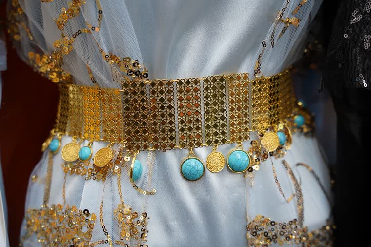
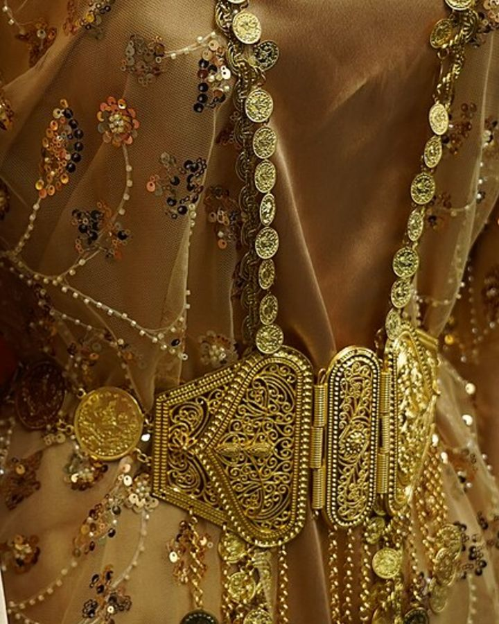
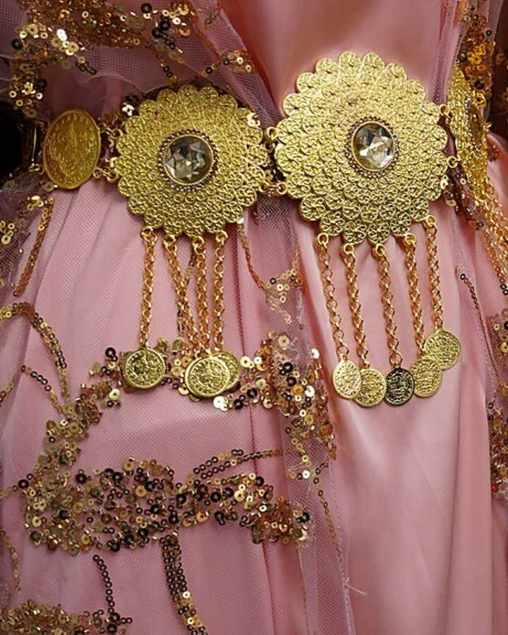
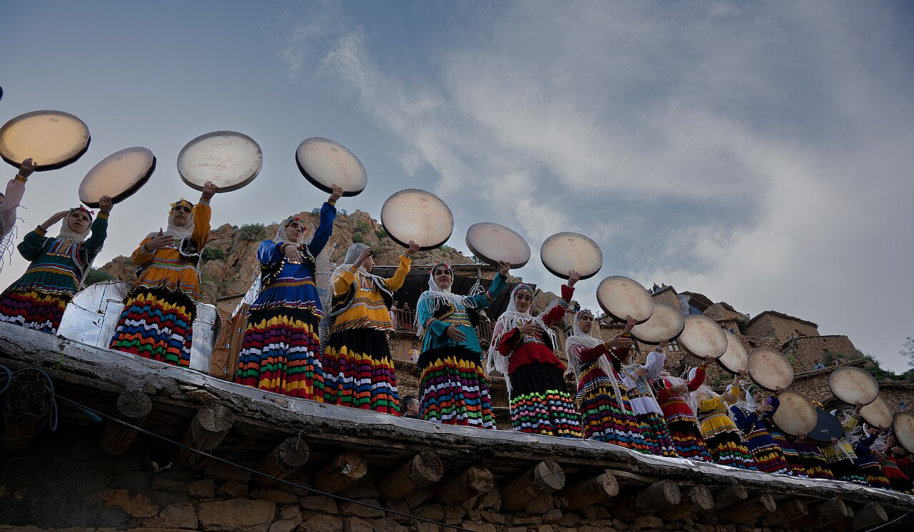
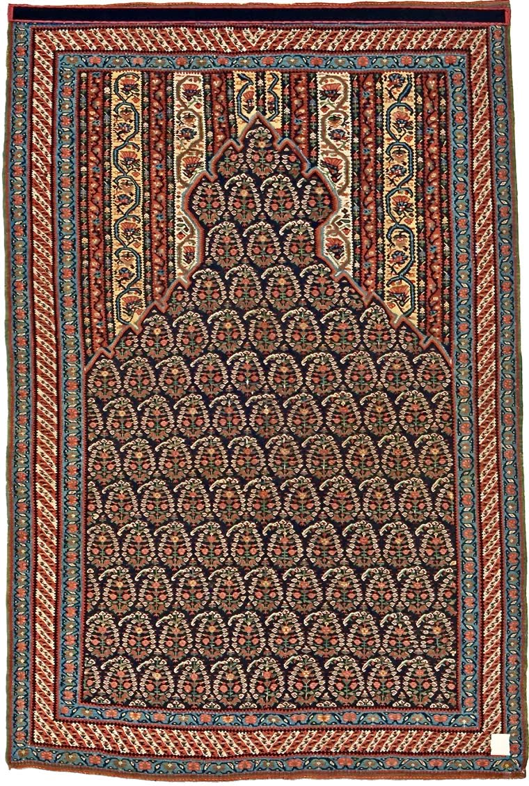

Ön Sipariş

Botan'dan Serhat'a, kadife kirasfistanlardan yün şal û şepiklere… 100 parçalık koleksiyonumuzu keşfedin, beğendiklerinize talep bırakın. Yeterli talep oluştuğunda satışa başlıyoruz.

Yöresine ve tarzına göre keşfet
Botan'dan Serhat'a, kadifeden pul payete yöresel kirasfistan modelleri.

Yün dokuma şal û şepik takımları: şepik ceket, şal pantolon ve şûtik kuşak.

Siyah-beyaz, kırmızı-beyaz ve renkli puşi (poşu) modelleri.

Kofi başlıklar, şûtik kuşaklar, kilim desenli heybeler ve el örgüsü yöresel çoraplar.
En çok beğenilen el işçiliği modeller






Kürt Yöresel şu an ön talep döneminde. Kirasfistan, şal û şepik ve puşi koleksiyonumuzun satışa açılmasını istiyorsanız aşağıdaki butona tıklayın. Talepler bizim için en değerli işaret — yeterli ilgi oluştuğunda site gerçek bir mağazaya dönüşecek ve talep bırakanlara öncelik tanınacak.
Bu kıyafetler vitrinlerde değil, hayatın içinde yaşıyor






Kürt kıyafet kültürüne dair yazılar
Kiras, fistan ve şûtik parçalarıyla kirasfistanı tanıyın; kumaş türleri, yöresel farklar ve seçim tavsiyeleri bu rehberde.

Kına, nişan ve düğün için kirasfistan seçimi, erkeklere şal û şepik ve puşi kombini, halaya uygun kumaş önerileri.

Şepik, şal ve şûtikten oluşan geleneksel Kürt erkek takımı: kumaşı, renkleri, kombin ve bakım önerileriyle kapsamlı rehber.
Kürt yöresel kıyafetleri, bin yıllık bir kültürün renklerini bugüne taşır. Kadınların düğünlerde ve özel günlerde giydiği kirasfistan; kiras, fistan ve şûtik kuşağından oluşur, yöresine göre kumaşı ve işlemesi değişir. Erkeklerin geleneksel takımı şal û şepik yün dokumasıyla; omuzların vazgeçilmezi puşi ise püsküllü dokusuyla tanınır.
Kürt Yöresel olarak amacımız, bu kıyafetleri aslına uygun kalitede ve tek adreste buluşturmak. Şu an ön talep dönemindeyiz: koleksiyonu inceleyin, beğendiğiniz ürünlere talep bırakın; yeterli ilgi oluştuğunda üretime ve satışa başlayacağız.